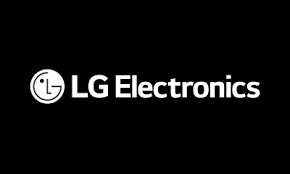
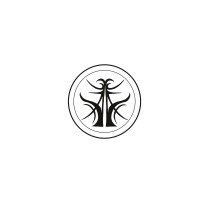
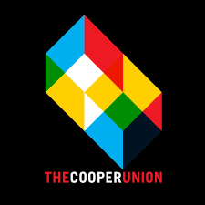

My professional journey through hardware and software engineering roles.

Implemented C firmware to drive multiple OLED display screens for LG smart dryers, interfacing with the mainboard and a rotary encoder (spin dial) for mode selection. Recognized as Best LGE Intern (Summer 2025) for high-impact platform contributions.

Designed and built LoRaWAN-based smart farm hardware using ESP32, Raspberry Pi, and custom PCBs, improving data transmission reliability through RF optimization techniques. Led end-to-end hardware development from prototyping to validation.

Designed and implemented a real-time energy monitoring dashboard using OSI PI and Python, incorporating machine learning to analyze 15+ data points and visualize historical trends for building energy management.
Led a 10-member squad in maintaining military communication equipment, ensuring operational readiness and efficient signal operations.